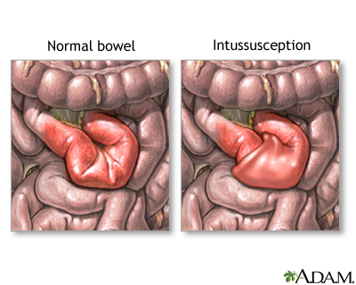
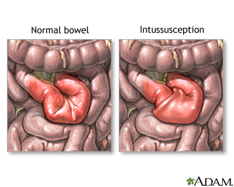
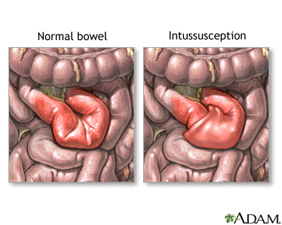

Images of IBD
 

IBD is a term for Ulcerative Colitis and Crohn's Disease which are characterized by prolonged inflammation and chronic inflammation of gastrointestinal(GI) tract.
Exact cause is unknown but it is the result of defective immune system. A good immune system attacks foreign organisms such as bacteria and viruses to protect body.In IBD, the immune system responds incorrectly to environmental triggers causing inflammation of the GI tract.
